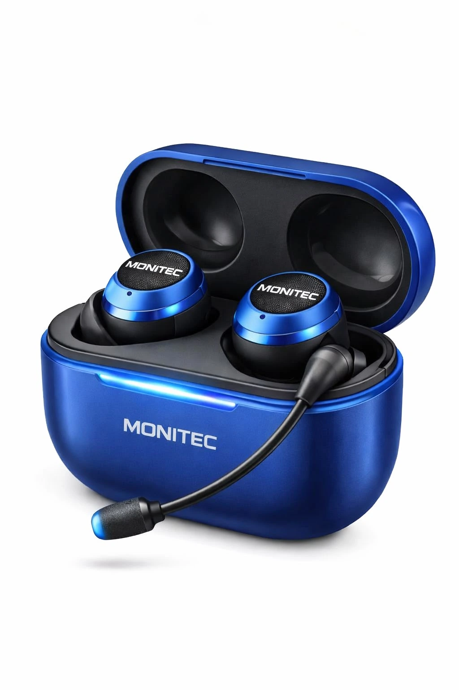

CONHEÇA A MONITEC
Uma nova forma de se conectar pelo som.
Conheça a Monitec EDU e sua proposta de monitoria sonora, apresentada por meio de um conceito de fones com microfone.
Apresentação ilustrativa do conceito Monitec.

MONITEC EDUConceito visual · Azul